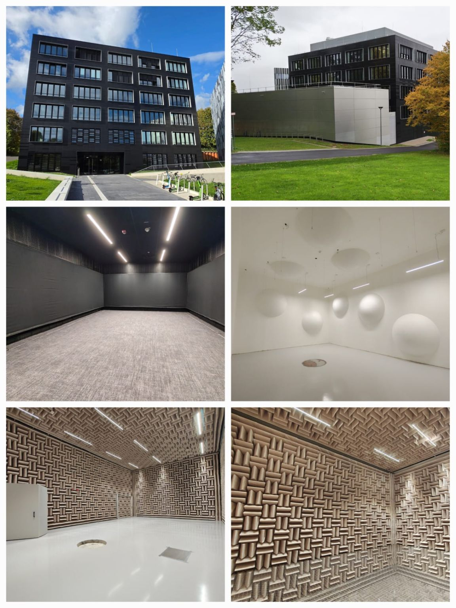
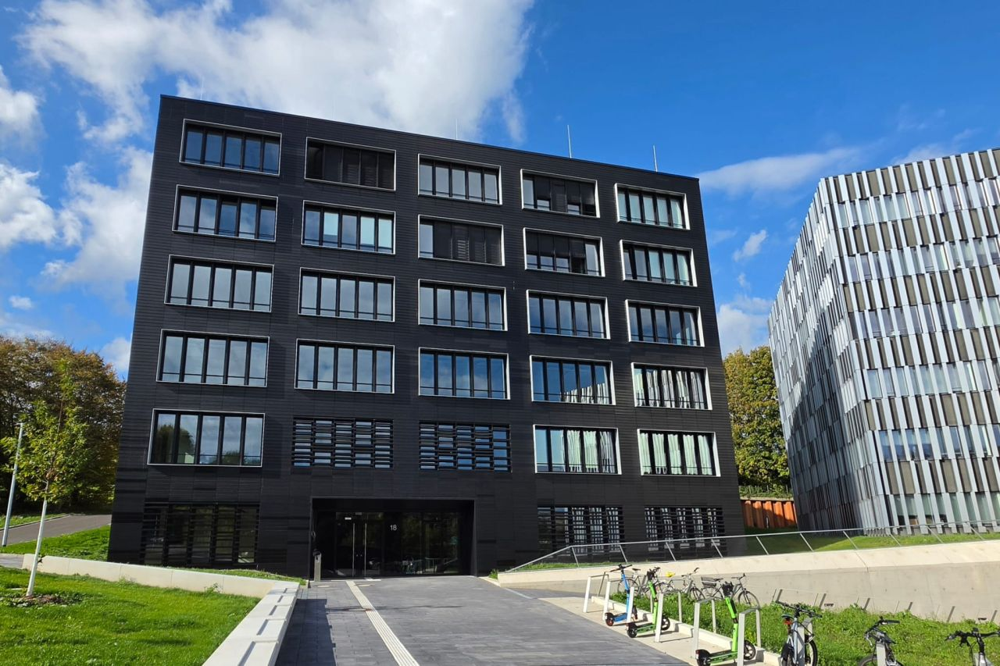
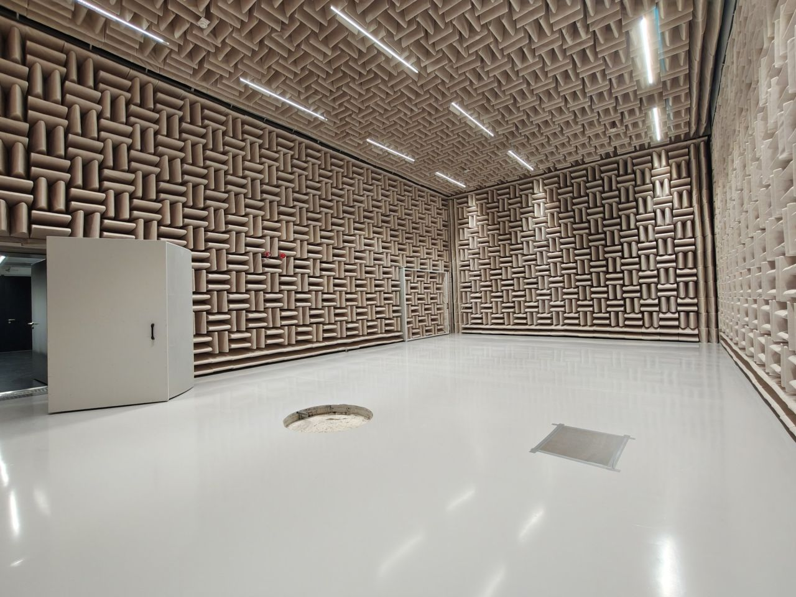
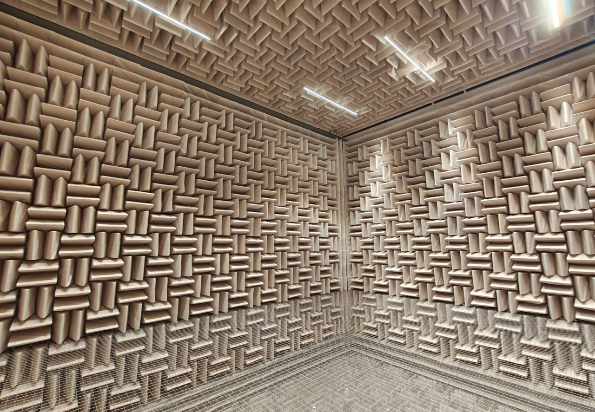
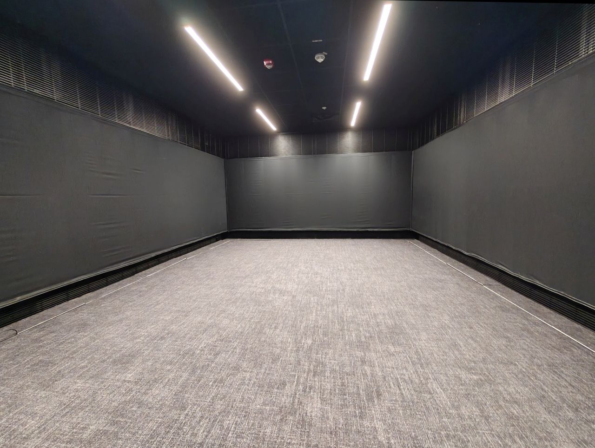
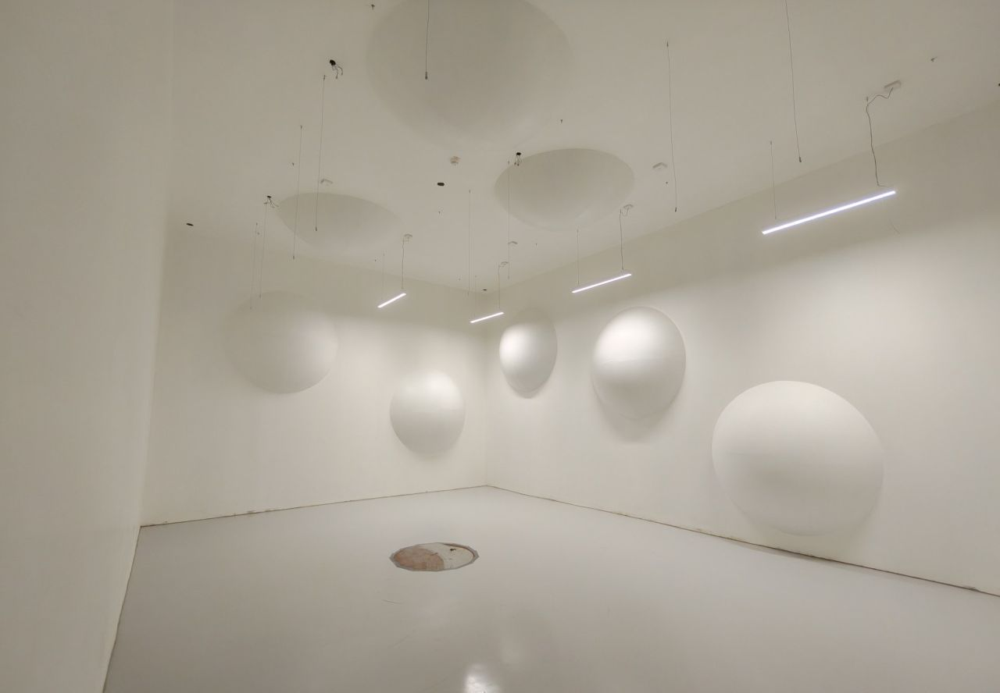
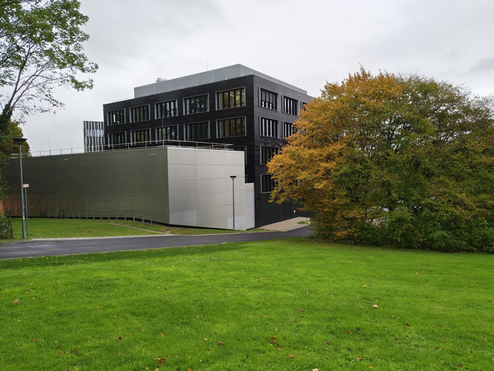

经过约两年的建设，我们听觉技术与声学研究所（IHTA）搬进了新落成的 Cube 3 大楼。新址在德国亚琛，地址是 Kopernikusstraße 18。

Cube 3 大楼与实验室（原帖拼图）
新楼里有一整层是研究所的办公室和会议室。另一层把我们的机械车间、电气车间和所有实验室都集中到了一起。如今，我们也跻身设备最齐全的声学研究所之列。对此，我们既感激，也自豪！

Cube 3 大楼正面
Cube 3 为我们提供了哪些新的测量和实验条件？

半消声室

全消声室

声学虚拟现实实验室

混响室
眼下，我们还在忙着拆箱，准备实验室，好让接下来的实验和测量能顺利开展。我们希望到 2027 年初，大部分实验装置都能投入使用，其中包括我们的 68 通道扬声器阵列 SCaLAr，以及能快速测量个体头相关传递函数（HRTF）的 64 通道系统。
后续进展，敬请期待！
想进一步了解 Cube 3，可以看看建筑设计事务所 RKW Architektur + 的项目介绍。

从草坪一侧看 Cube 3 大楼
本文图片均来自 LinkedIn 原帖。